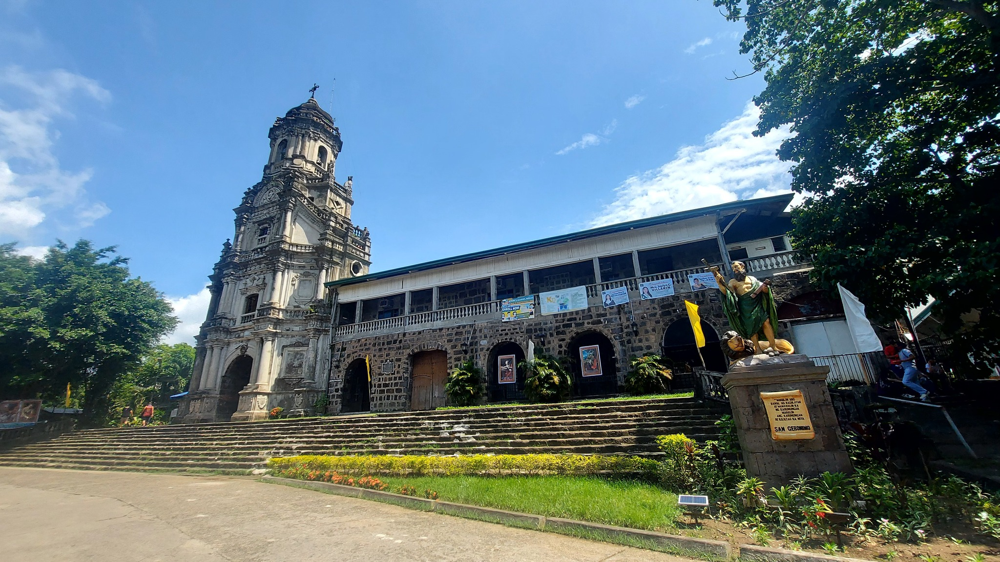
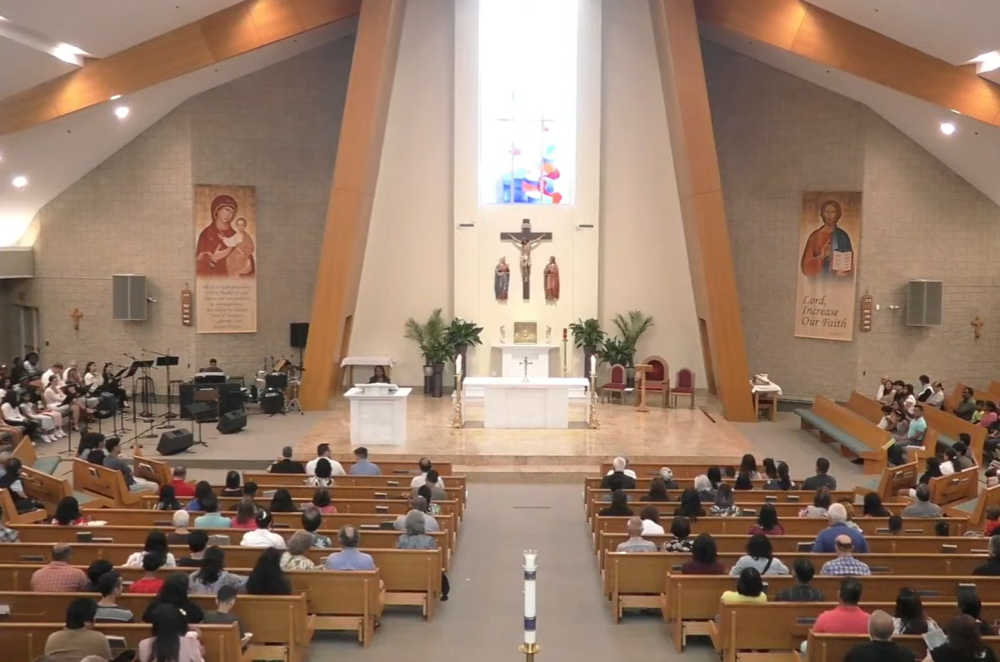
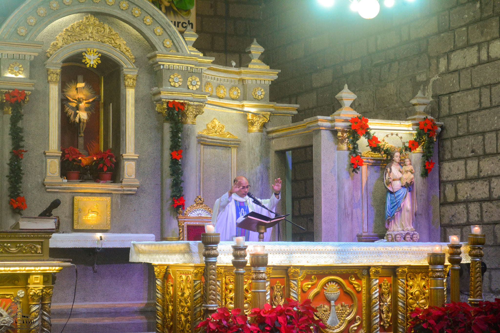

Location:
P. Oliveros St., Antipolo, Rizal.
Best for: Architecture Lovers, History Buffs, and Artists.
Vibe: Grand, Ornate, and Cultural.

St. Jerome Parish Church
Admire One of the Most Spectacular Neo-Baroque Towers in the Philippines.
The Antipolo Cathedral is the spiritual heart of the province, home to the centuries-old statue of the Our Lady of Peace and Good Voyage. It is an international shrine that has drawn millions of devotees for over 400 years.
P. Oliveros St., Antipolo, Rizal.


